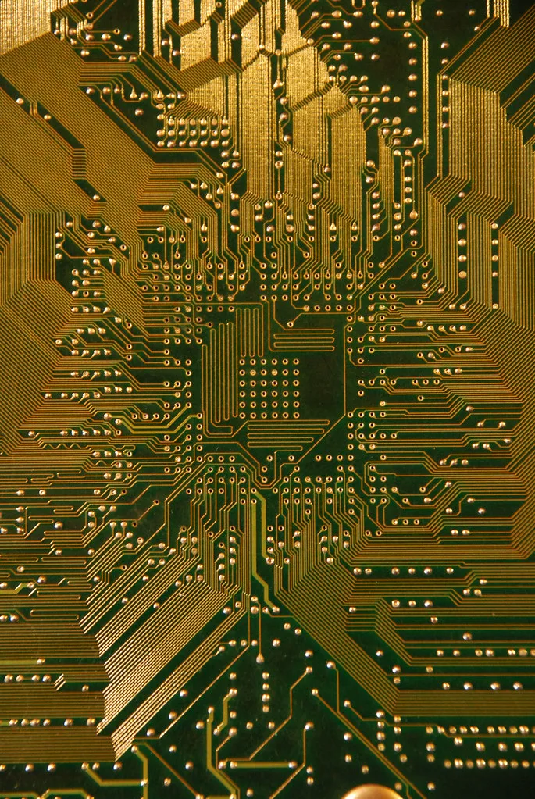
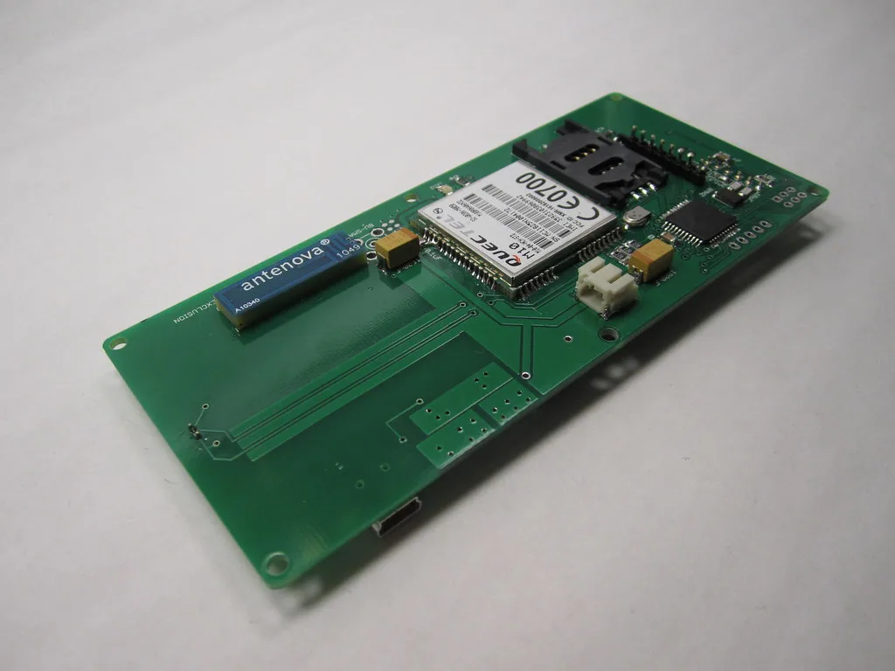

이재용·최태원·이해진, 美서 젠슨 황과 회동…HBM 동맹 다진다
이재용 삼성전자 회장과 최태원 SK그룹 회장, 이해진 네이버 이사회 의장이 미국 현지에서 엔비디아 젠슨 황 최고경영자 등 글로벌 인공지능(AI) 기업 경영진과 회동을 갖는 것으로 전해졌다. 실리콘밸리 인근에서 추진되는 이번 만남에는 샘 올트먼 오픈AI 최고경영자와 다리오 아모데이 앤트로픽 최고경영자도 참석할 것으로 알려지면서, 메모리 반도체와 생성형 AI 분야를 대표하는 한미 양국 리더들이 한자리에 모이는 사실상 첫 사례로 주목받고 있다.
이번 회동의 핵심 의제는 차세대 고대역폭메모리(HBM) 공급망 확보와 파운드리 협력, AI 인프라 구축인 것으로 전해졌다. 삼성전자와 SK하이닉스는 엔비디아의 차세대 AI 가속기에 탑재될 HBM4 공급을 두고 전략적 협력 방안을 논의할 것으로 예상된다. 생성형 AI 서비스 확산으로 고성능 메모리 수요가 가파르게 늘어나는 가운데, 안정적인 공급망을 선제적으로 구축하려는 국내외 기업들의 이해관계가 맞물린 결과로 풀이된다.

최근 일각에서는 AI 반도체 투자 열기가 과도하다는 이른바 '피크아웃' 우려가 제기돼 왔다. 이런 상황에서 메모리와 GPU, 생성형 AI 서비스 각 분야를 대표하는 리더들이 함께 모여 협력 방안을 논의하는 모습은 이 같은 우려를 불식시키려는 업계 차원의 메시지로도 해석된다. 특히 오픈AI와 앤트로픽처럼 실제로 대규모 컴퓨팅 자원을 소비하는 AI 서비스 기업 수장들이 메모리·GPU 공급사 경영진과 직접 만나 수요와 공급 양쪽의 시각을 조율하는 자리라는 점에서 의미가 크다는 평가가 나온다.
삼성전자와 SK하이닉스 입장에서 이번 회동은 각각 파운드리와 메모리 사업에서 엔비디아와의 협력 관계를 한층 강화할 수 있는 기회로 여겨진다. 두 회사는 최근 HBM 다음 세대를 겨냥한 신규 메모리 기술 개발 경쟁을 벌이고 있는 만큼, 이번 만남에서 나온 논의가 향후 기술 로드맵과 투자 계획에도 영향을 줄 수 있다는 관측이다. 네이버 역시 자체 AI 모델 고도화와 클라우드 인프라 확충을 추진하고 있어, 이해진 의장의 이번 회동 참석은 해외 AI 리더들과의 협력망을 넓히려는 행보로 풀이된다.

국내 산업계에서는 이번 회동이 한미 양국의 AI·반도체 공급망 협력을 상징적으로 보여주는 장면이 될 것으로 기대하고 있다. 미국이 자국 내 AI 인프라 확충을 서두르는 가운데, 한국 기업들이 메모리와 파운드리 등 핵심 공급망에서 차지하는 위상을 재확인하는 자리가 될 수 있다는 분석도 나온다. 다만 구체적인 투자 규모나 공급 계약 조건 등은 아직 확정되지 않은 것으로 전해져, 실제 협력이 어떤 형태로 구체화될지는 좀 더 지켜봐야 한다는 신중론도 있다.
업계 관계자들은 이번 회동을 계기로 한국 메모리 기업들과 미국 AI 기업 간의 공급 계약이나 공동 개발 프로젝트가 추가로 발표될 가능성에 주목하고 있다. HBM4를 둘러싼 경쟁이 삼성전자와 SK하이닉스 양사 구도로 좁혀지는 상황에서, 이번 만남이 향후 수주 경쟁과 기술 협력 방향을 가늠할 수 있는 계기가 될 것이라는 전망이 나온다.